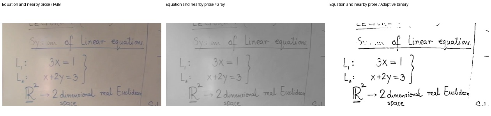
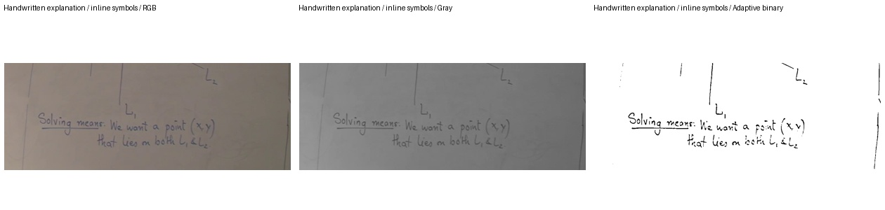
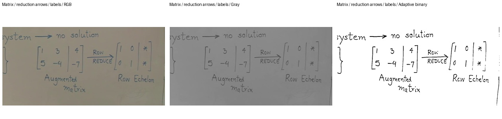
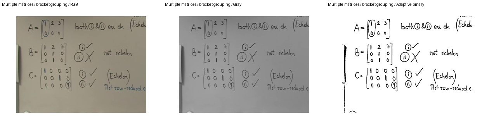
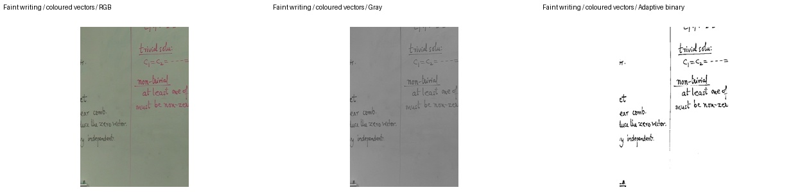
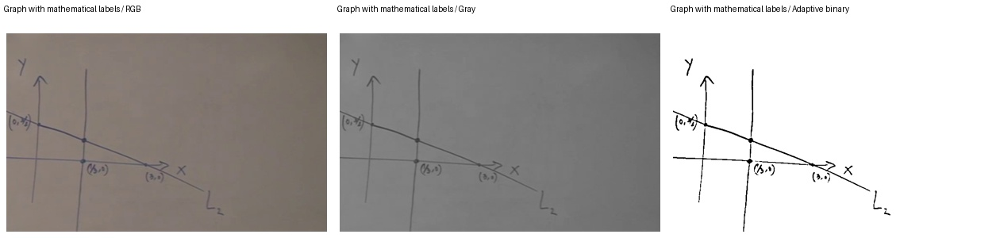

실제 판서 입력 · 전처리 비교
왼쪽부터 RGB 원본, 회색조, 적응 이진화입니다.
수식 인식 정확도와 도입 기준
01-formula · 640.139s

01-prose · 785.785s

02-matrix · 442.942s

02-multiblock · 2570.068s

06-symbols · 1045.044s

01-diagram · 640.139s
